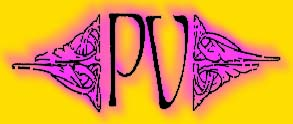

i.. ludiamoci: 1995 | 1996 | 1997 | 1998 | 1999


La Pergamena Virtuale - Associazione Culturale
"ATTRAVERSO LO SPECCHIO"
CONCORSO LETTERARIO
I - Il Concorso si articola in due sezioni:
A) sezione riservata ai soci de La Pergamena Virtuale (ad esclusione dei componenti della giuria);
B) sezione riservata ai non soci.
II - Ad entrambe le sezioni si partecipa con un solo racconto, inedito e lungo max cinque cartelle dattiloscritte (ciascuna da 30 righe x 60 battute), sul tema "ATTRAVERSO LO SPECCHIO".
III - Il racconto non deve recare il nome dell'autore, ma solo il titolo.
Titolo, nome, cognome, indirizzo e numero telefonico dell'autore vanno riportati su un foglio a parte, in busta chiusa allegata al racconto stesso.
IV - I racconti dovranno pervenire - in triplice copia - entro il 4 settembre 1998 (non farà fede il timbro postale) al seguente indirizzo: LA PERGAMENA VIRTUALE - CONCORSO "ATTRAVERSO LO SPECCHIO" - SEZIONE (specificare se A o B) - c/o Studio Legale Monti - Via Carducci, 71 - 65122 Pescara.
V - L'autore del miglior racconto verrà premiato con:
SEZIONE A) un buono acquisto da L. 150.000 (spendibile presso l'Agenzia Einaudi di Pescara - Via Trento 114) e la pubblicazione dell'opera nel sito de La Pergamena Virtuale (http://www.interzen.it/pergamena);
SEZIONE B) un buono acquisto da L. 250.000 (spendibile presso l'Agenzia Einaudi di Pescara - Via Trento 114) e la pubblicazione dell'opera nel sito de La Pergamena Virtuale (http://www.interzen.it/pergamena).
VI - I dattiloscritti non saranno restituiti; tutti i racconti pervenuti verranno depositati presso la biblioteca dell'Associazione.
VII - I vincitori saranno resi noti il giorno della premiazione.
VIII - La Giuria è composta da: Alessia Ambrosini (Scrittrice e Presidente de La Pergamena Virtuale), Andrea Monti (Scrittore e Segretario de La Pergamena Virtuale), un rappresentante dell'Agenzia Einaudi di Pescara.
IX - Tutti i partecipanti saranno telefonicamente informati sul luogo e data della cerimonia di premiazione, che si terrà nella Galleria della Stazione FF SS di Pescara il giorno 12 settembre 1998 ore 20.30, nel corso della manifestazione I...ludiamoci organizzata dall'ARCI Nuova Associazione di Pescara.
X - I premi devono essere ritirati personalmente dai vincitori.
XI - La partecipazione al Concorso implica l'accettazione del presente regolamento.
XII - L'inosservanza delle modalità di partecipazione comporta l'esclusione dal concorso.